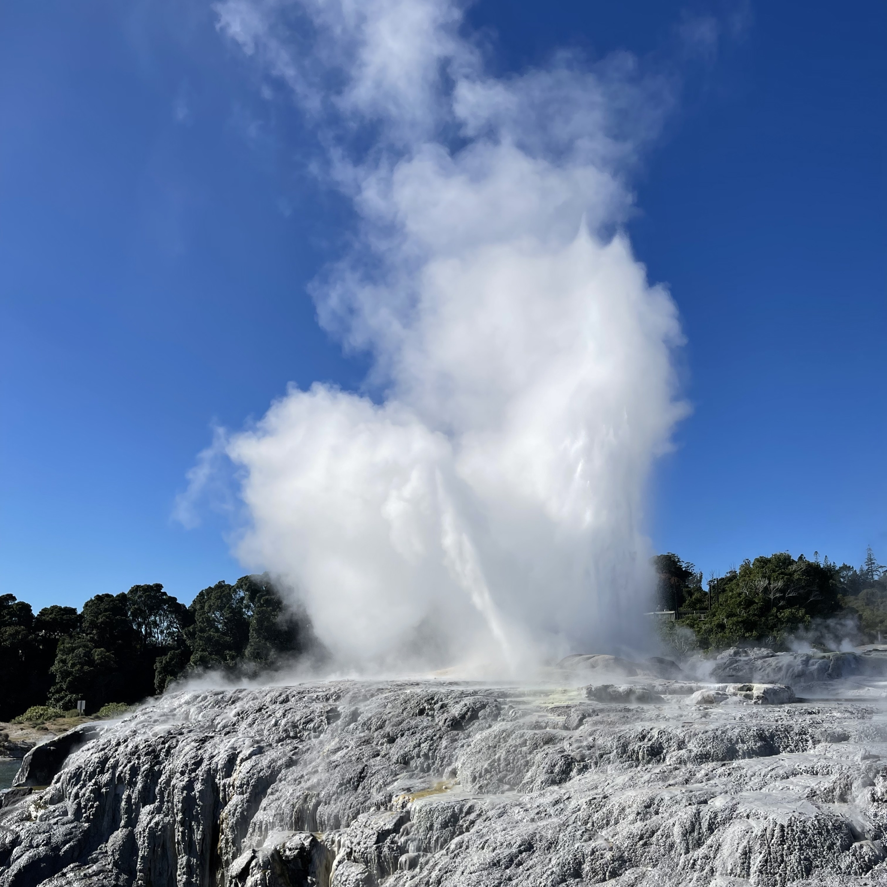
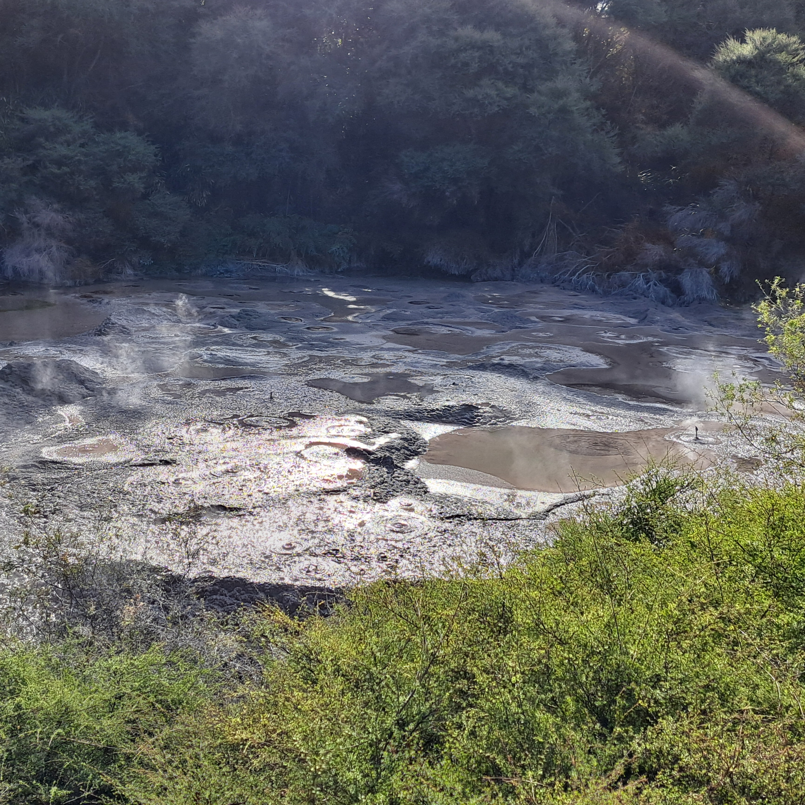

Te Puia

Rotorua's famous geysers and Māori heritage..
Rotorua's famous geysers and Māori heritage make Te Puia a special place that many people love to visit.
Here, you can see the amazing Pohutu Geyser shoot hot water high into the air, along with bubbling mud pools and steam vents. At Te Puia, you can also learn about Māori culture by watching traditional carvings and weaving!
Where you can see incredible steaming pools and powerful geysers,
and discover the amazing traditions of New Zealand's first people.



Pohutu Geyser
Learn more about the Pohutu Geyser...Geothermal Valleys
Learn more about the Geothermal Valleys...Mudpools
Learn more about the Mudpools...